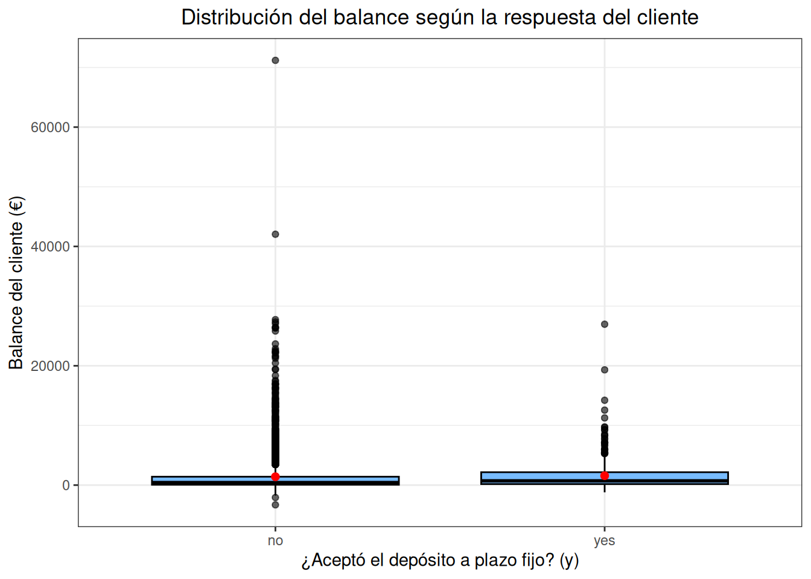
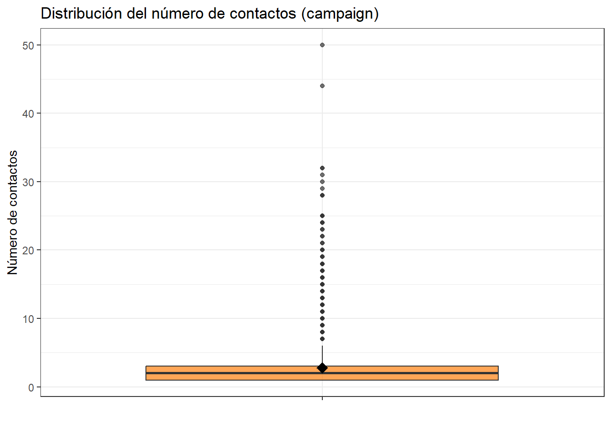

Chapter 2 Análisis exploratorio bivariado.
## age job marital education default balance housing loan contact day
## 1 30 unemployed married primary no 1787 no no cellular 19
## 2 33 services married secondary no 4789 yes yes cellular 11
## 3 35 management single tertiary no 1350 yes no cellular 16
## 4 30 management married tertiary no 1476 yes yes unknown 3
## 5 59 blue-collar married secondary no 0 yes no unknown 5
## month duration campaign pdays previous poutcome y
## 1 oct 79 1 -1 0 unknown no
## 2 may 220 1 339 4 failure no
## 3 apr 185 1 330 1 failure no
## 4 jun 199 4 -1 0 unknown no
## 5 may 226 1 -1 0 unknown no- A continuación vamos a comparar la variable y respecto a las variables numéricas independientes.
# Diagrama boxplot: y vs age
data %>%
ggplot(aes(x = y, y = age)) +
geom_boxplot(fill = "green", alpha = 0.6, color = "black") +
stat_summary(fun = mean, geom = "point", shape = 20, size = 3, color = "red") +
labs(
title = "Distribución de la edad según la respuesta del cliente",
x = "¿Aceptó el depósito a plazo fijo? (y)",
y = "Edad del cliente"
) +
theme_bw() +
theme(
plot.title = element_text(hjust = 0.5),
strip.background = element_rect(fill = "gray90", color = NA),
strip.text = element_text(face = "bold")
)
El grafico muestra la relación entre la variable y (“yes” o “no”) y la variable numérica age. A simple vista un análisis visual nos indica que la edad, de manera aislada no es un factor determinante para predecir la aceptación del depósito a plazo fijo en la campaña. La similitud es casi igual en medianas, rangos y dispersión entre los clientes que si aceptaron y los que no aceptaron. Sin embargo, sería necesario considerar otras variables en conjunto con la edad, en lugar de usarla como un criterio principal.
data %>%
ggplot(aes(x = y, y = balance)) +
geom_boxplot(fill = "#1E90FF", alpha = 0.6, color = "black") +
stat_summary(fun = mean, geom = "point", shape = 20, size = 3, color = "red") +
labs(
title = "Distribución del balance según la respuesta del cliente",
x = "¿Aceptó el depósito a plazo fijo? (y)",
y = "Balance del cliente (€)"
) +
theme_bw() +
theme(plot.title = element_text(hjust = 0.5))
La mediana y la media que se ve como el punto rojo son similares tanto para los clientes que aceptaron como los que no. Sin embargo, hay muchos valores atípicos en los dos grupos lo que nos puede indicar que la distribución está sesgada. Como conclusión, el balance no parece tampoco ser conciso a la hora de determinar la aceptación o rechazo de la oferta ya que los valores atípicos indican que hay presencia de clientes con perfiles financieros distintos.
data %>%
ggplot(aes(x = y, y = duration)) +
geom_boxplot(fill = "#FFD700", alpha = 0.6, color = "black") +
stat_summary(fun = mean, geom = "point", shape = 20, size = 3, color = "red") +
labs(
title = "Distribución de la duración de llamada según la respuesta del cliente",
x = "¿Aceptó el depósito a plazo fijo? (y)",
y = "Duración de la última llamada (segundos)"
) +
theme_bw() +
theme(plot.title = element_text(hjust = 0.5))
En esta variable se nota una diferencia entre la aceptación y el rechazo, ya que la duración de la llamada es marcada mayormente en los clientes que aceptaron. Mientras que en el grupo que no aceptó la mayoría de las llamadas fueron cortas.
La duración de la llamada parece ser un predictor fuerte de aceptación. Como interpretación se puede decir que las llamadas mas largas tienden a asociarse con una mayor probabilidad de éxito, posiblemente ya que al haber mayor tiempo, hay mas tiempo de persuasión.
data %>%
ggplot(aes(x = y, y = campaign)) +
geom_boxplot(fill = "#32CD32", alpha = 0.6, color = "black") +
stat_summary(fun = mean, geom = "point", shape = 20, size = 3, color = "red") +
labs(
title = "Distribución de número de contactos en la campaña actual según la respuesta del cliente",
x = "¿Aceptó el depósito a plazo fijo? (y)",
y = "Número de contactos en la campaña actual"
) +
theme_bw() +
theme(plot.title = element_text(hjust = 0.5))
La mediana del número de contactos en la campaña es muy baja en ambos grupos, con unos valores atípicos que llegan hasta 50 contactos, sin embargo, el grupo de aceptación tiende a tener un número menor de contactos. Para concluir se nota que una cantidad alta de intentos de contacto no necesariamente mejora la tasa de éxito e incluso podría llegar a ser contraproducente y los clientes que si aceptaron requerían en promedio menos intentos.
data %>%
ggplot(aes(x = y, y = pdays)) +
geom_boxplot(fill = "#FF69B4", alpha = 0.6, color = "black") +
stat_summary(fun = mean, geom = "point", shape = 20, size = 3, color = "red") +
labs(
title = "Distribución de días desde el último contacto según la respuesta del cliente",
x = "¿Aceptó el depósito a plazo fijo? (y)",
y = "Días desde el último contacto"
) +
theme_bw() +
theme(plot.title = element_text(hjust = 0.5))
Al analizar el grafico se muestra que el tiempo desde el último contacto influye fuertemente en la probabilidad de éxito de la campaña.
Los clientes que aceptaron tendieron a ser contactados más recientemente en comparación con los que la rechazaron. Esta diferencia indica que el tiempo transcurrido desde el último contacto influye directamente en la probabilidad de éxito de la campaña. Aunque algunos clientes pueden mantener interés incluso después de largos períodos sin contacto, la estrategia más efectiva parece ser enfocarse en contactos más frecuentes.